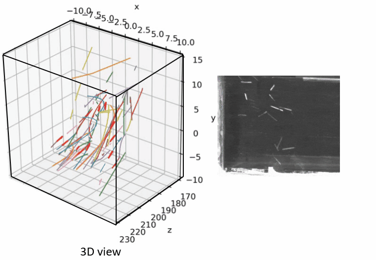
Cross-plate form object 3D tracking software
I have designed a user-friendly software that can perform multi-size object 3D tracking, as well as calibrate a 4-camera system using DLT algorithm and bundle adjustment optimized linear calibration, with the aid of a charuco board. The user interface for tuning all detectors and reconstructors is conveniently available under the Jupyter Notebook widget.
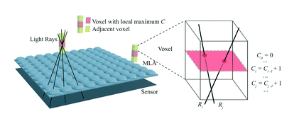
Blender Ray tracing with 4D Light field
Simulate Ray tracing processing, contributing to 3D reconstrcution of micro light filed lens. The CUDA optimized ray intersection link for real time 3D reconstruction. The published paper link. This project has been expanded to include a macro lens, and further optimized to enable sub-voxel resolution for real-time reconstruction. on-going project
Rotation tracking based RealSense and phantom camera system
Developing rotation tracking capliable software. First test with RealSense D435. Then test with phantom high speed camera. YouTube Link. Further Model D405 working with on chip system. link
Bacteria tracking
Develop algorithm to do the particle tracking with geometry changing object.

Artifical muscle motion tracking
Tracking the behavior of artificial muscle ring with multi electrical field.

Bridge defects 3D relocation
Use 2D images taken by drons to 3D reconstruct dense cloud point of bridge. Trained VGGnET to filter the feature matching to find the 3D coordinates of target
image.

Automatic Identification of Graphene
PCA feature extraction from SEM images of graphene. QDA classifier is applied to distinguish graphene area and non graphene area.

OpenGL dynamic office environment render
Use GLFW for interactive camera control. Multi light source applied to the model. Real time depth component calcuation with projection matrix
, view matrix, and model matrix. Shadder mapping all light source. YouTube Link

Room escape game by UE4 blueprint
Use blueprint of UE4 design interesting room escape game. YouTube Link
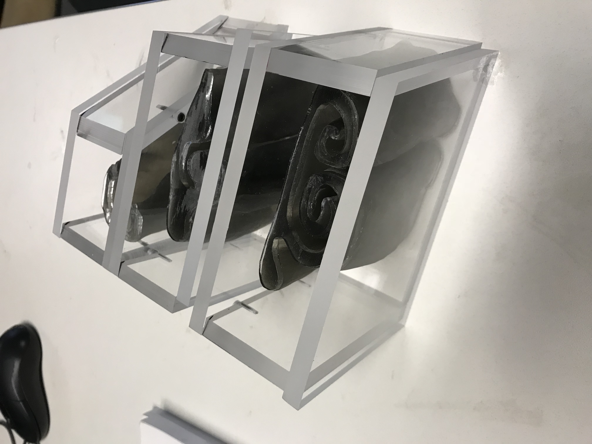
Reconstruct 3D geometry of pig nose inner wall with CT scan images
Developed algorithm to 3D reconstruct geometry based on CT scanned images to
3D surface, and merge the surface to solidify to
3D object
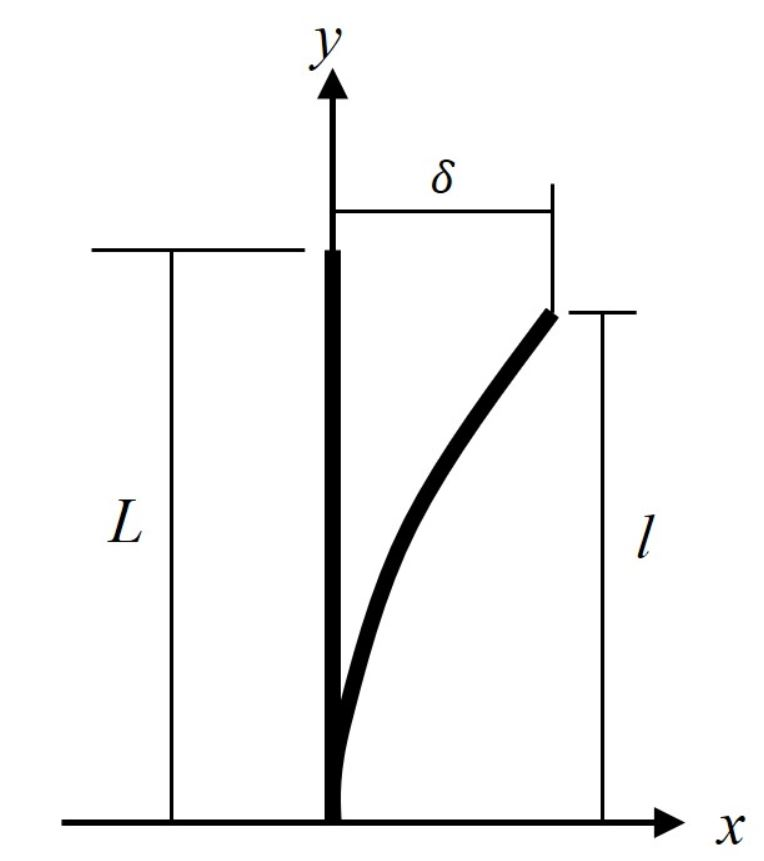
Force analysis based on the bending model
Simulation model to solve the equivalent force based on the bending shape.
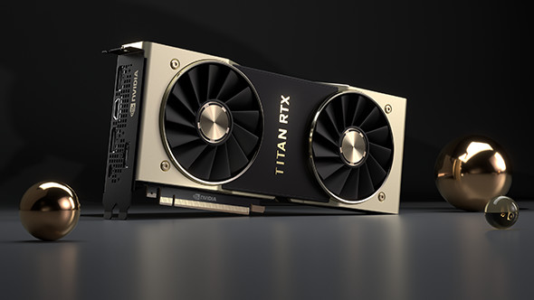
CUDA local environment practice
Set up local CUDA environment with multiply optimization, including control divergence, shared memory, constant memory, memory burst, dynamic parallel programming, atomic operation and so on.

Convolution CUDA optimization ranking with Rai on AWS server
6 different optimization method for MXnet convolution layer:
shared memory with unroll, constant memory, tree reduction, atomic operation, restriction with loop unroll, register tiled.
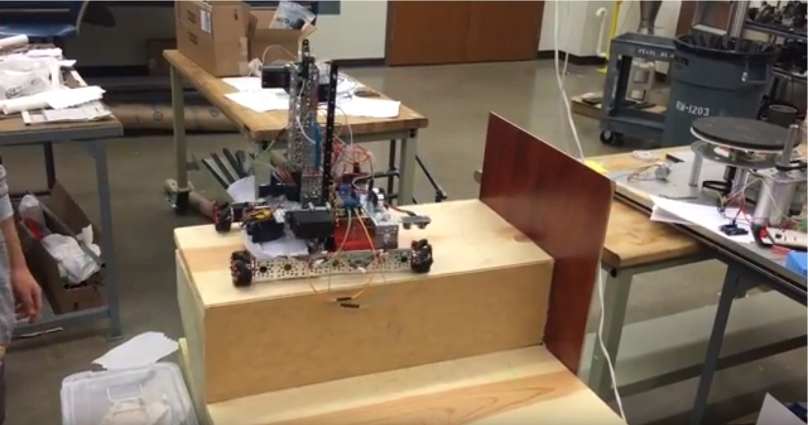
Stair clean robot
Robot can detect surrounding environment, climb stair and clean stair. Video Link.
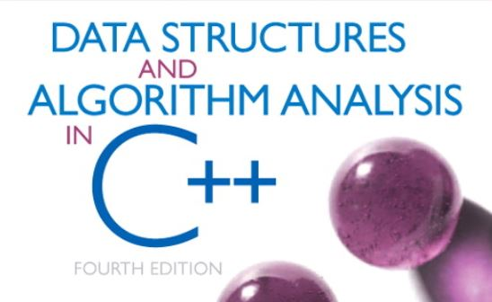
Achieved typical data structure and algorithm problem with c++
Algorithm toolbox, algorithm string, algorithm on graph, data structure.
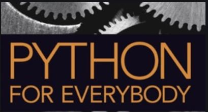
Python data structure
Python project about data structure.

Linux system practice
Command line note for linux kernel
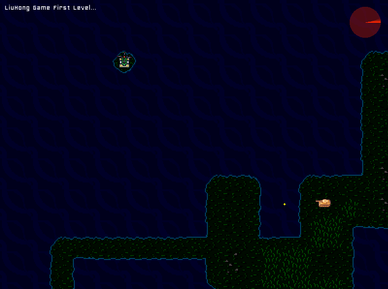
SDL and Lua embeded 2d C++ Game engine design
Simple 2D game engine loading dynamic from lua scripts by using SDL library, Code Link

Combine Lidar with IntelRealSense
Working 3D reconstruction and pose estimation based on Lidar data and stereo camera data.
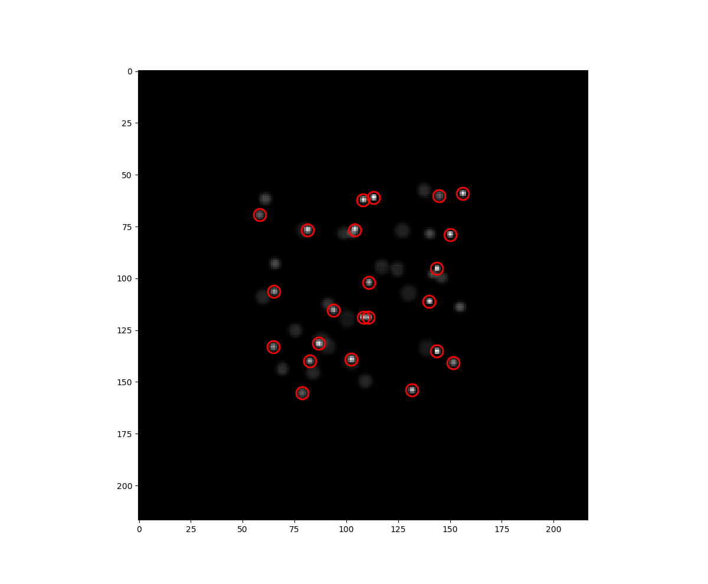
Micro 3D refocus particle detection
Refocus particle detection with matrix lens.
Pytorch training
Kaggle model with pytorch hand book.
pytorch principle notebook.
pytorch Digit-Recognizer with cuda notebook.
pytorch transfer learning notebook.
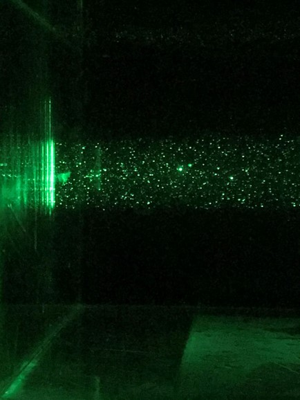
High speed continuous PIV system
Design high speed PIV system with continuous laser and high speed camera.

AnimeFaceGAN training
Training AnimeFace generator with visdom.
Teaching assistant grading assistant
Generate comments for each student and distribute by email.
Oil-coated bubble PIV PTV tracking
Tracking oil-coated bubble trajetory with induced flow.
Blender Bowling Animation with Physics engine
Blender Clcyes engine bowling animation.